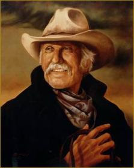

By the time they reached Ogallala, both the cowboys and the stock from the Hat Creek Cattle Company were utterly depleted. Their journey, which began on the banks of the Rio Grande, had already claimed the life of one of their number. And their destination – Montana – was hundreds of daunting, desolate miles away.
So once the Company reached Ogallala, the herd was allowed to graze outside the city limits while the men went in to purchase supplies and, ah, contract services from certain carnal entrepreneurs of the distaff variety.
The heroic Red Cloud: Lakota patriot, bold warrior, wily field commander, scourge of Leviathan's blue-bellied enforcers.
Dish Boggett, an honest and capable if unremarkable cowboy, was grooming his horse when a small company of soldiers, under the command of a Captain Weaver, suddenly materialized. Each of the dusty soldiers wore an impressive portion of the Nebraska prarie; their eyes displayed the weary, angry frustration of proud men who were badly over-matched by a wily opponent – the heroic Lakota war chief Red Cloud.
Captain Weaver's men and their mounts were just as depleted as those of the Hatcreek Company. There the resemblance ended: The soldiers were engaged in Washington's war to expropriate – and exterminate, if necessary – the Sioux. To that end Weaver decided it would be necessary to confiscate at least some of the property the Texans had brought with them, beginning with Dish's beautiful buckskin gelding.
Dish politely but firmly informed Captain Weaver that the horse was not for sale.
“I ain't askin',” Weaver said, dispensing with the pretense of civility and allowing an arrogant sneer to crease his ugly features. “I'm telling you. I'm” -- Weaver's unexceptional mind groped ineptly for the appropriate official euphemism -- “requisitioning that horse. For the government.” He settled back in his saddle with a satisfied smirk, expecting this conjuration, through which theft is transmuted into “policy,” to do its work. It didn't.
“I'm tellin' you,” Dish repeated, “he's not for sale.”
“You defy the United States Government?” Weaver said in a tone of offended piety that underscored the implicit threat. “That's treason,” he hissed. “You cow-boys could be hung – for treason.” Having unsheathed the threat of lethal violence that resides within all government action, Weaver allowed himself a sadistic chuckle.
When Dish reiterated once more that his horse wasn't for sale, Weaver's Scout, Dixon, decided to escalate the conflict by spitting a glob of tobacco juice on Dish's back. A brief scuffle ensued between Dish and the mounted scout, with Dish getting the worst of it.
Before the malodorous government contractor could steal the horse, however, the youngest member of the Hat Creek Outfit – 17-year-old Newt Dobbs – grabbed the reins and reminded Dixon that the animal wasn't for sale. With the insensate fury of a bully used to getting his way, the scout began to lay into the terrified but resolute youngster with his quirt.
Down the street, the leader of the cattle drive (and Newt's unacknowledged father) Woodrow Call was walking out of a store with his arms full of packages. Though well into middle age, Call had the wiry build of a man who worked as hard as he could as long as he had to each day, and knew no other way to live.
Taciturn and stoic, Call had the eyes of a man who had fought more battles than he could count. A legendary Texas Ranger in his younger years, Call was creaky in the joints but still quick on the draw and good with his fists. He also had the slow-burning fuse and high-yield temper of the proverbial patient man. When those eyes caught the sight of Newt being whipped, the fuse was expended in an instant.
Call quickly saddled his horse and tore across the town at full gallop. Reaching the still-mounted Dixon, Call violently unhorsed him with a blow, dismounted, and kicked him full in the face before he could recover. Dixon wound up near a stable, and soon found several tools deployed against him. Call seized a branding iron and used it to hit Dixon – first in the abdomen, and then across the face, then across the skull. He then picked up the dazed and bleeding scout and hurled him face-first into an anvil.
By this time, Dixon's face looked like a strawberry pie after it had been trodden on by a horse. After being fed a face-full of pig iron, Dixon's mouth was full of shattered teeth. He had endured at least two concussions, and was limp as a dishrag. But for all this, Call's anger was not turned away, and his hand was stretched out still.
Call grabbed a pair of tongs and -- his eyes narrowed in diabolical invention -- was about to apply them to do heaven-knows-what to Dixon when his best friend, Gus McRae (like Woodrow, a living legend as a former Texas Ranger), lassoed him and dragged him off of the Army scout.

It took several seconds for Call's rage to subside and for him to recognize Gus, his friend for several decades. As his self-control returned, Call assured himself that Newt was all right. By the time he remounted his horse, Call's self-control had reasserted himself. He spied a small group of settlers who had witnessed the entire incident – which only took a minute or so – frozen in astonishment. And, gentleman that he was, Call felt he owed those good people an explanation.“I hate rude behavior in a man,” he explained in his quiet, unassuming drawl. “I won't tolerate it.” He politely tipped his hat, and rode away.
This vignette from the splendid novel (and equally fine television mini-series) Lonesome Dove is the most beautiful scene in American literature. I have no idea what author Larry McMurtry's politics might be. I don't care to find out, either.
In creating this moment – which was a pivotal, character-defining moment for Newt, and nearly as crucial for Woodrow Call -- McMurtry offered a vivid illustration of the omnivorous corruption of government in general, and militarism in particular. He also underscored the primacy of private property and portrayed the courageous defense of one's rights in the face of government aggression, as well as the righteous use of violence in defending one's family and fellows. Gus's intervention vivified the Just War principle of proportionality (yes, Dixon deserved to have the hell beaten out of him, but straight-up killing him would have been disproportionate). And Dixon's threat to murder Dish and his friends for the supposed crime of protecting their property lays bare the true nature of all government everywhere at all times.
The story told in that scene from Lonesome Dove -- at least regarding the behavior of Weaver and Dixon -- is true in everything but its details.
Somewhere today some government functionary is doing to someone in this country exactly the same thing that Weaver attempted to do to Dish: Stealing his property through the threat, or use, of lethal violence. Yes, Weaver offered to pay Dish for the horse, but forcing an unwilling seller into taking money for something he wants to keep is just another species of theft; it's usually called “eminent domain.”
Today's Dish Boggetts could be property owners in Texas along the Mexican border who are being forced to sell their property to accommodate the government contractors building the most useless artifact in American history, the “border fence.”
If the border hamlet of Lonesome Dove had really existed, its current residents would probably be among those under siege by land-snatchers working for the Department of Homeland Security.
But this is hardly the only example. The arrogant sadism and official lawlessness displayed by Weaver and Dixon are rapidly becoming the norm.
In the mid-1800s as depicted in Lonesome Dove, an Army scout would use his quirt to punish a civilian who wasn't adequately broken to the saddle of the state; today, the paramilitary goons we call police quickly resort to the Taser in such situations, giving non-violent -- and often non-resisting -- civilians a brief taste of electrocution torture.
The odds are steadily growing shorter that sometime in the life of each of us we'll run into some state functionary as arrogant, violent, and despicable as Dixon. When assaulted by such a specimen -- or, more importantly, when someone we love comes under such an attack -- we would be morally entitled, if not morally required, to go "Woodrow Call" on his a**.
The key question is: Would we be ready -- mentally, emotionally, and physically -- to do so, knowing the possible consequences?

For news and commentary, and to purchase my new book, please visit The Right Source.
Dum spiro, pugno!